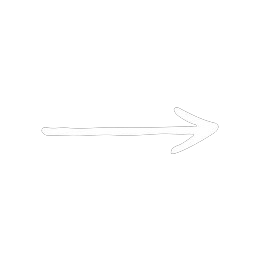

BattleBot (Oct. 2024 - Nov. 2024)
Inspired by the show "Battlebots", myself and my 3 friends built a prototype battlebot named Nigel. Nigel was built using a 3-D printed chassis, an Arduino Uno, as well as an L298 driver board to control the wheels. After various iterations and many lessons learned, we ended up with a product we are proud of.

A competition battlebot (Image via Design 1st Blog)


Nigel - Final Prototype